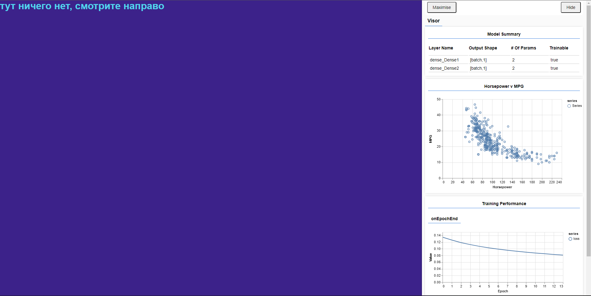
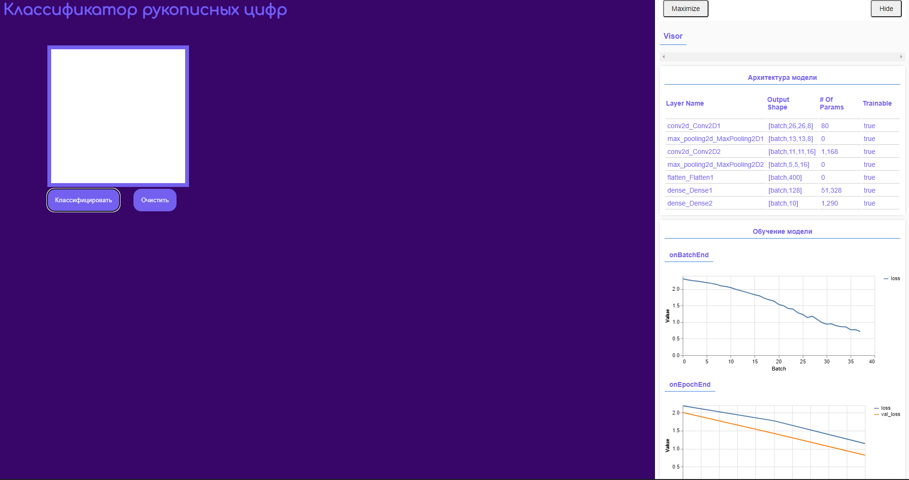
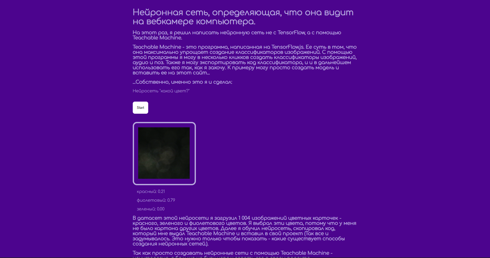
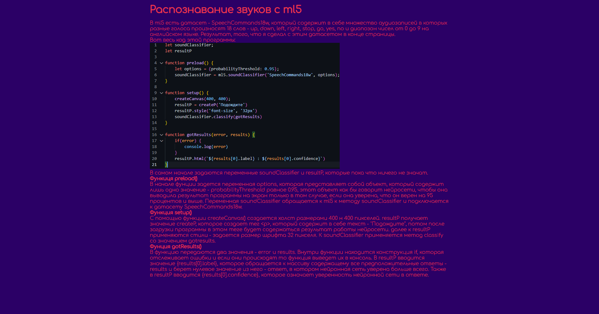

Мои нейросети
Тут продемонстрированы различные способы создания нейронных сетей на языке JavaScript
Первая нейронная сеть

Моя самая первая нейросеть написанная на TensorFlow.js
Нейросеть, распознающая рукописные цифры

Моя вторая нейронная сеть, написанная на TensorFlow.js. Задачаа этой нейронной сети - распознавать цифры, написанные от руки.
Нейросеть, созданная с Teachable Machine

Писать код - тяжело и нудно. Поэтому умные люди из Google создали Teachable Machine, с помощью которого можно создать свой датасет, и свою нейросеть "в пару кликов".
Нейросеть созданная с помощью ml5
ml5 - это почти тоже самое, что и TensorFlow.js, однако его синтаксис куда проще. Также он объединяет в себе и TensorFlow.js и TFvis.js, что позволяет упростить код еще сильнее. Короче, ml5 - это TensorFlow.js но с куда более лаконичным и простым синтаксисом.
Распознавание голосовых команд с ml5

Нейросеть, написанная на ml5.js, которая распознает голосовые команды.